This Codelab contains the technical hands-on section of the Solace Masterclass: Implementing Event-Driven-Architectures Participants of this masterclass will be implementing this Codelab in a Github Codespace environment provided as a part of the masterclass session. The codespace contains all the software packages required for implementing the hands-on Codelab.
The agenda of the hands-on is as below :
- Use case introduction
- Cloud account and broker setup
- Event Portal design import
- Application development and testing:
- Explore the selected use case and understand the interactions between applications and events
- Implement each application with business code logic as described in the Codelab
- Test the end to end event flow
- Understand the benefits of EDA and Solace in these use cases
As a part of the event storming session earlier you would have discussed and brainstormed on few use cases. In this brainstorming you have identified systems, events and processes involved in the flow(s) and also designed the topic taxonomy following Solace best practices and recommendations.
In the hands-on section of this masterclass, you can choose one of the below industry domains :
- Retail
- Banking
and follow it for implementing. Due to time limit considerations, we will be implementing only a selected subset of the whole design.
Solace Cloud Account
In case you do not have an active Solace cloud account, you can register for one via the link: Solace trial account registration.
You can log in to the newly created Solace cloud account using the link : Solace Cloud Account Login. Once you have registered and logged in to the Solace cloud account, you can get started with provisioning a Solace developer grade broker which will be used in the next sections.
Provision Your First Solace PubSub Broker
Navigate to Cluster Manager
- In the Solace Cloud Console, click Cluster Manager in the left navigation

- Click Create Service (or the + button if you have existing services)

Configure Your Service
- Fill in the service configuration details:
- Name : Choose a concise name (e.g.,
solace-masterclass) - Environment : Leave as Default
- Cloud : Choose your preferred cloud provider (AWS, Azure, or GCP)
- Region : Select a region closest to your location
- Broker Release : Leave as default (latest stable)
- Service Type : Select Developer (free tier)

- Click Create Service
Wait for Provisioning
- The service will take 3-5 minutes to provision
- Status will show as Creating...

- Once complete, the broker details page will load

Explore Your Broker
- Navigate through the tabs:
- Connect: Connection details and credentials

- Manage: Service management and configuration

Configure environment and modelled event mesh
Environment Setup
Environments in Solace Cloud represent the runtime environments within your organisation. For example, you may have
- Multiple development environments
- Multiple testing environments
- A Staging or Pre-Production
- A Production environment
- In the Solace Cloud Console, navigate to the Environments tab

- In the Environments tab, there is a default environment created for you called "Default"

- Click on the ... buttons next to the Default environment and select Runtime Configuration Settings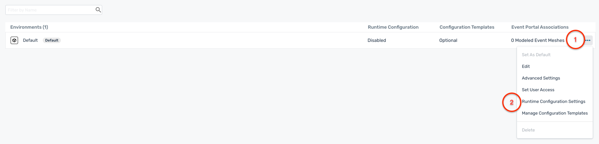
- Click on the Auto on Promotion radio button to enable automatic promotion of configuration changes from Event Portal to the associated PubSub+ Cloud broker

- Click Save to save the changes
- Optional: You can edit some of the environment details like name and description by clicking on the Edit button under the ... menu

Modeled Event Mesh Setup
A modeled event mesh represents an actual event mesh or event flow operating in a specific runtime environment. Modeled event meshes help you define and visualise event flows between publishing and subscribing applications within your event-driven architecture (EDA).
- In the Solace Cloud Console, navigate to the Runtime Event Manager tab

- Click on the Create Modeled Event Mesh button

- Fill in the details for the modeled event mesh:
- Name :
Dev-Mesh - Type :
Solace - Description :
Development Modeled Event Mesh - Environment : Select
Defaultenvironment
- Click Create to create the modeled event mesh

- You will see the newly created modeled event mesh in the list

- Click on the modeled event mesh name to view its details
- Under the Event Broker Connections tab, click on Connect Event Broker

- Select the PubSub+ Cloud broker you created earlier (e.g.,
ep-codelab) and click Add
- You should now see the broker connection listed under the Event Broker Connections tab

The Event Portal is a cloud-based tool that simplifies the design of your event-driven architecture (EDA). With the Event Portal, you can:
- Define and track relationships between applications in a highly decoupled EDA.
- Create and manage events using a user-friendly GUI. In summary, the Event Portal streamlines event management, making it an essential part of your EDA toolkit.
Step 1 : Import Event Portal designs
- From the Solace cloud account screen, click on the Designer button and enter the Event Portal's Designer page as below : 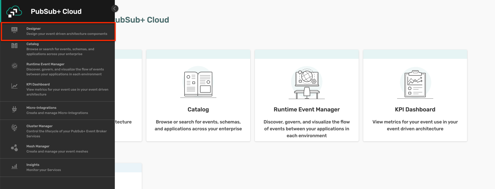
- Based on the choice of your domain, you can select one of the two domain files as below and download it from the links :
- Banking Industry : Download Banking Industry App Domain File
- Retail industry : Download Retail Industry App Domain File - Click on the Import Application Domains button by clicking on the three dots in the top right corner as below : 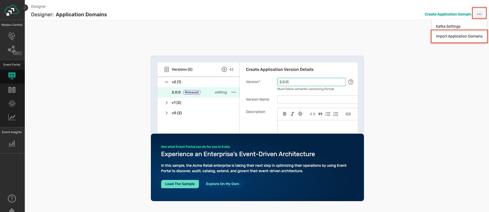
- A file selector dialog box will be displayed so that you can select the application domain file of your choice.
- Select on a file and click Open, this will result in the application domain being imported as below : 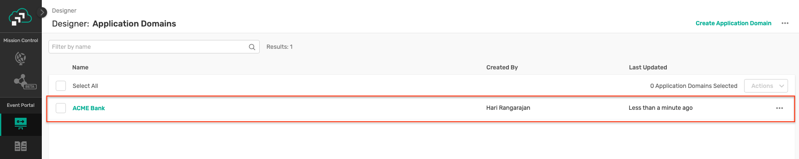
- Inside the application domain, you should be able to see the objects from your selected industry as below :
- Retail industry : 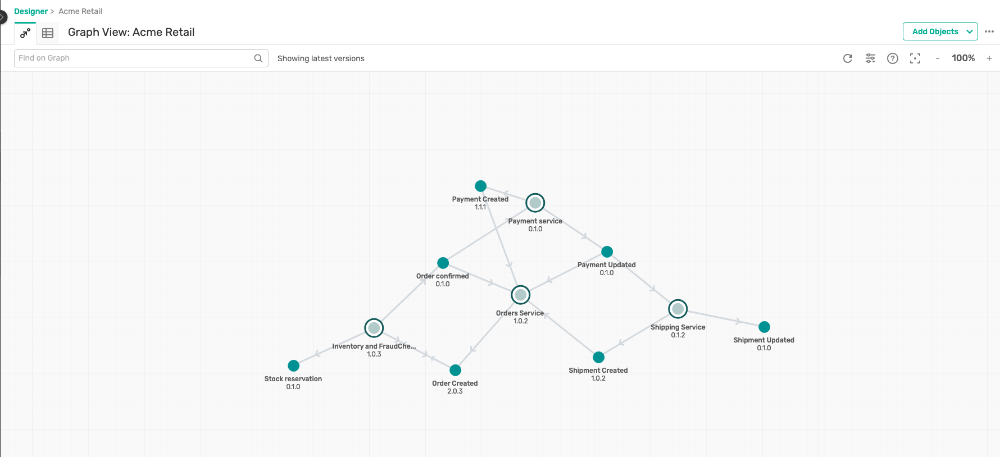
- Banking industry : 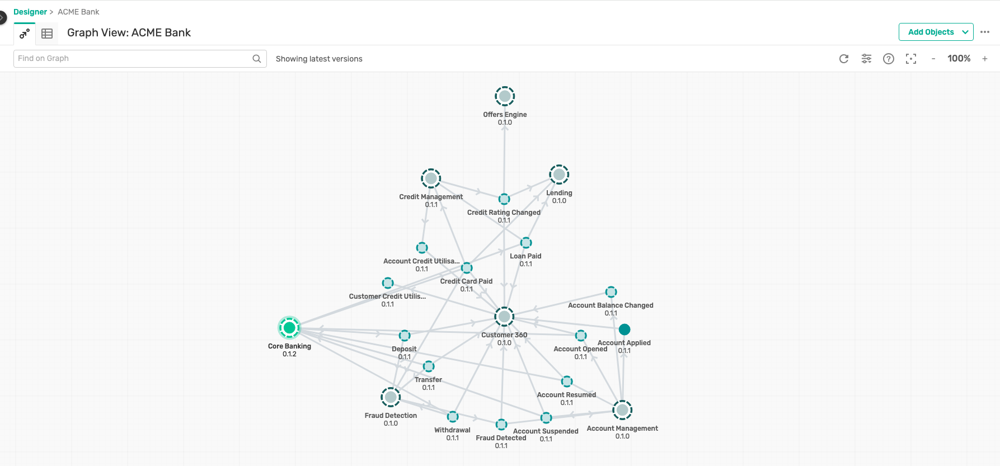
- Explore the various EDA artifacts like schemas, events, applications, their relationships and dependencies.
For the hands-on excercise, we will be using GitHub Codespaces which provides a cloud-based development environment with all the necessary tools and software pre-installed.
Setup GitHub Codespace
Step 1: Open the Workshop Repository
Visit Solace Developer Workshops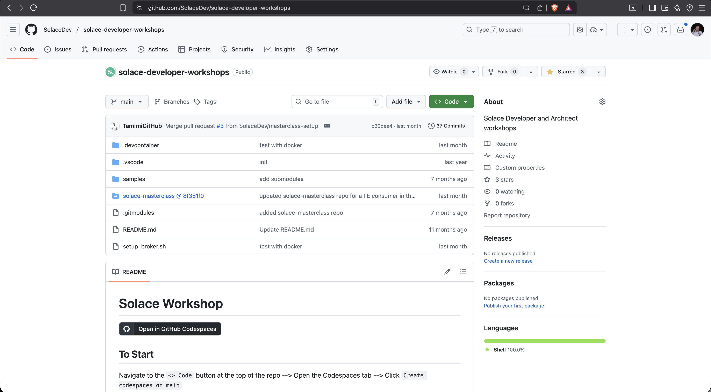
Step 2: Click Open in GitHub Codespaces
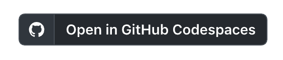
Step 3: Choose Change Options → set machine type to 4-core

Step 4: Click Create Codespace

Use case selection
Based on use case of your choice, please follow the appropriate chapter below :
- Retail: Sections 6 and 7
- Banking: Sections 8 and 9
Use case explanation
For the retail domain use case, we will be considering a fictitious company called Acme Retail which has been consistently recognized as the leader in Ecommerce website. Unfortunately, due to legacy and outdated architecture choices and implementation, Acme Retail is encountering major challenges in expanding their operations as below :
- Order processing errors
- Inventory management issues
- Fraudulent orders
This has impacted their customer's experience, and they are at risk of losing their customers. As a solution, they have defined a POC to event enable the Order-to-Cash (OTC) flow.
The dependency between the applications and events are described as below :
- User orders via Order service
- Order service publishes Order-Created event
- Inventory-Fraud-Service subscribes to Order-Created, reserves stock and conducts fraud check
- Inventory-Fraud-Service:
- Publishes Order-Confirmed event
- Order service subscribes to Order-Confirmed event for user status updates
- Payment service subscribes to Order-Confirmed event and integrates with PSP/Gateway for payment transaction processing
- Payment service
- Publishes Payment Created event
- Publishes Payment Updated event
- Order service subscribes to the Payment Created event for user updates
- Shipping service subscribes to Payment Created integrates with 3PL or the logistics provider
- Shipping service:
- Publishes Shipment created event
- Publishes Shipment updated event
- Order service subscribes to the Shipment created for user updates
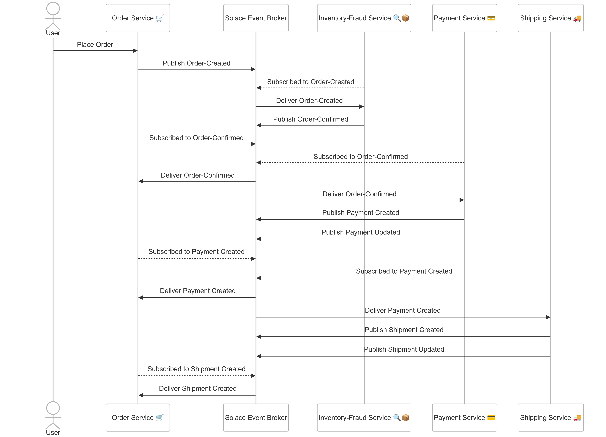
This POC leverages the following architectural principles and practices :
- Microservices Architecture: The system is broken down into smaller, independent services that communicate with each other through messages. This makes the system more scalable, resilient, and easier to maintain.
- Event-Driven Architecture: Events are used to trigger actions in different parts of the system. For example, placing an order triggers an event is subscribed by multiple interested consumers. This makes the system more flexible and responsive to changes.
- Publish-Subscribe Pattern: Services publish events to a central message broker, and other services can subscribe to those events. This allows for loose coupling between services, as they don't need to know about each other directly.
As a part of the workshop, you will have access to prebuilt applications and artifacts which you will be using in this segment of the workshop.
1. Order Service
Introduction
The Order-Service acts as the entry point to the whole flow and emulates the user experience of creating a basket and converting it into an Order. As described earlier in the over-all flow definition, it creates the Order-Created events and subscribes to other relevant events which it uses for showing realtime status updates on the order level.
How to run ?
Part 1 : Broker Configuration
- Click on the Designer button and enter the Designer screen where you should be able to see the newly imported Application Domain. 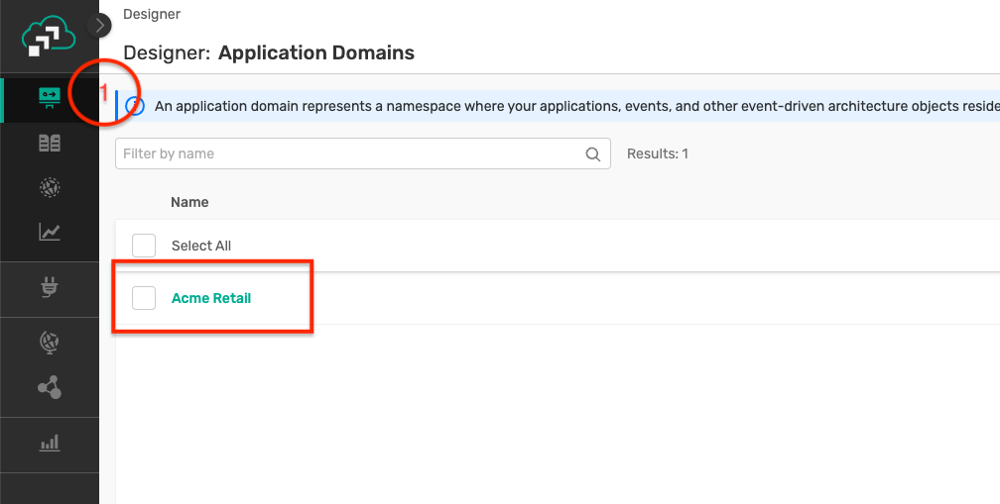
- Click on the Acme Retail application domain, where you can visualise the events, applications and their interactions as below : 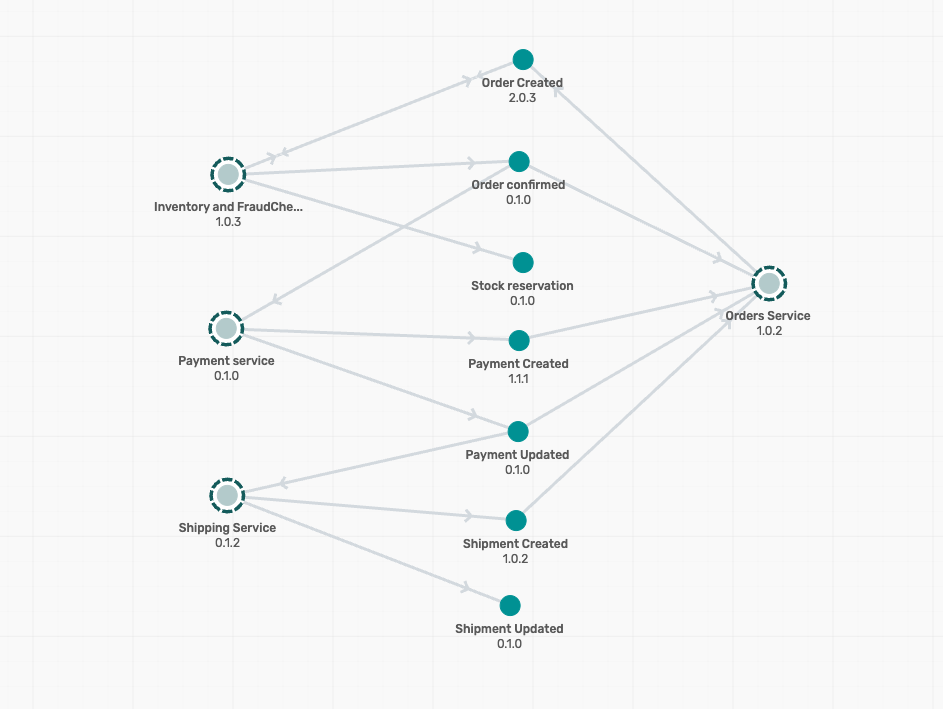
- Click on the Order Service, and then on the Open Application which pops up as below : 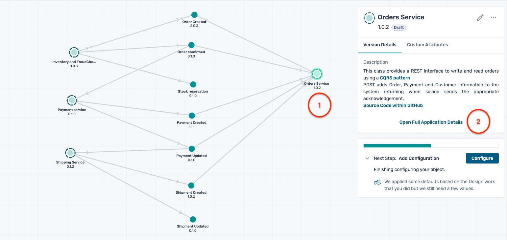
- The Order Service application screen displays you the various events that are published and subscribed by this version of the application : 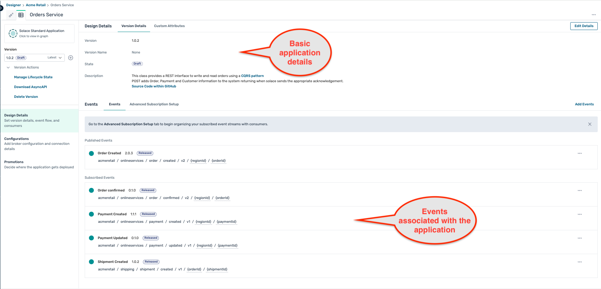
- Click on the Configurations tab on the left sidebar as below :

- This opens up the configuration screen, click on the Create Configurations button as shown:

- A modal window opens up as below, first select the environment and the broker that you have created earlier and click on the Next:Define Event Handling button : 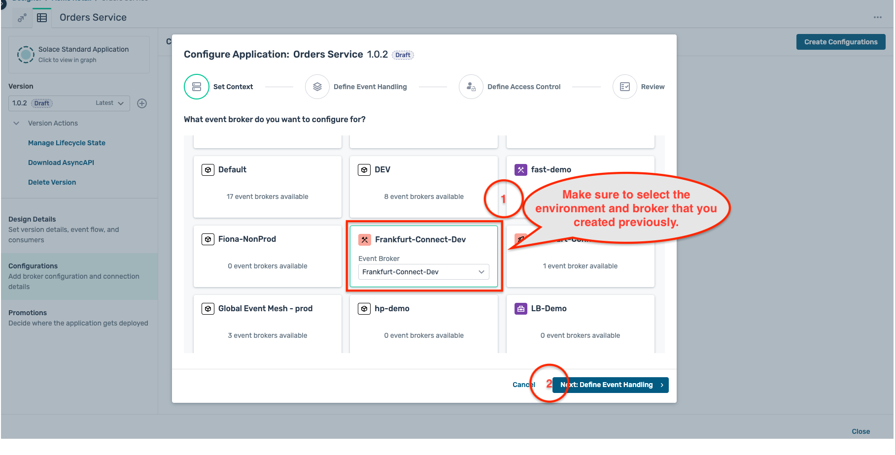
- For now, we are not configuring any consumers (or subscriptions) for this application, so click on the Next: Define Access Control button directly.

- For authentication, select the Basic access type and enter a client usename and password of your choice as below. Make sure to keep a note of these credentials as they will be required in the following steps.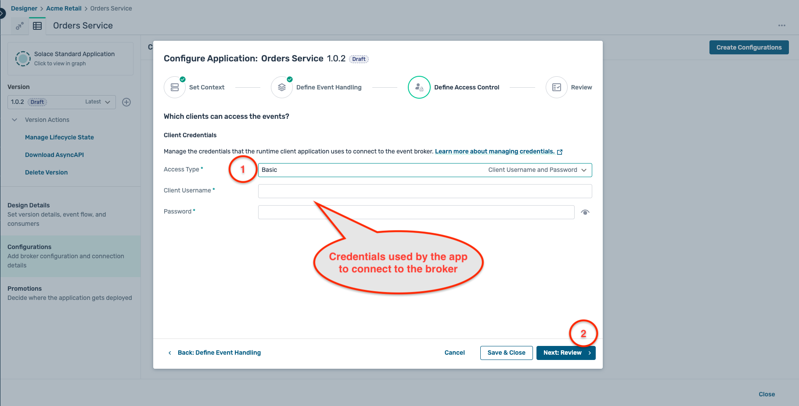
- Review the configuration in both the Define Event Handling and Define Access Control tabs and if everything looks as expected, click Start Promotion as below :

- An intermediate screen is shown as below indicating some design mismatches, but you can safely ignore them for now and click on the Preview Promotion button as below : 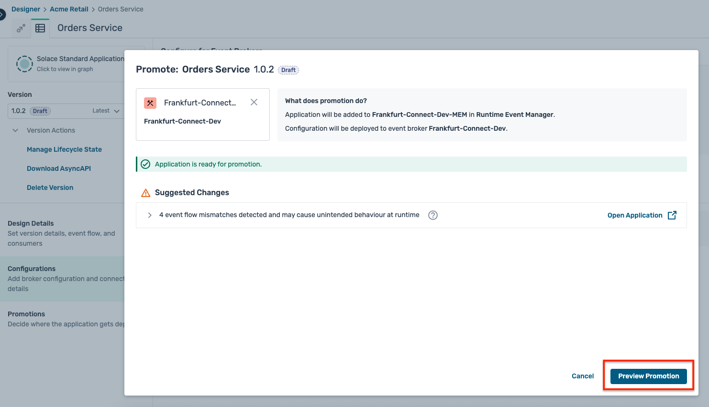
- The final promotion preview is shown as below, detailing the various configuration objects that will be created on the broker. Click on the Promote button as shown :

- Once the deployment is completed, you can see the deployed application version on the broker as below :

Part 2 : Application build and deployment
- In the codespace terminal, create a new terminal window by clicking on the + icon on the terminal pane
- Navigate to the directory: solace-masterclass/retail-domain/order-service
- Run the command :
mvn clean spring-boot:run - Once the application is up and running, open the application using the url that is shown in the popup within the codespace.
- You should see a page which looks like this : 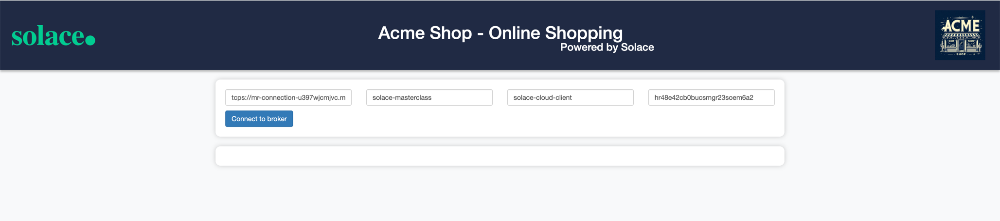
- Here you can connect to your Solace cloud broker instance to publish and subscribe events.
- The connection parameters for the Order Service application can be captured from below : 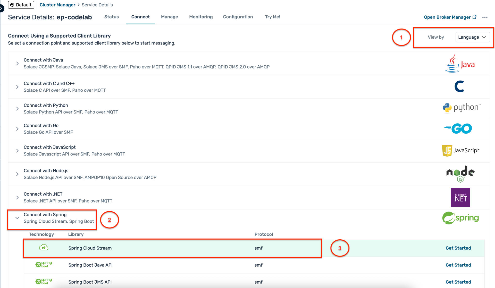
- Make a note of the following properties in a separate file as they will be required for the following steps:
- Public Endpoint
- Message VPN
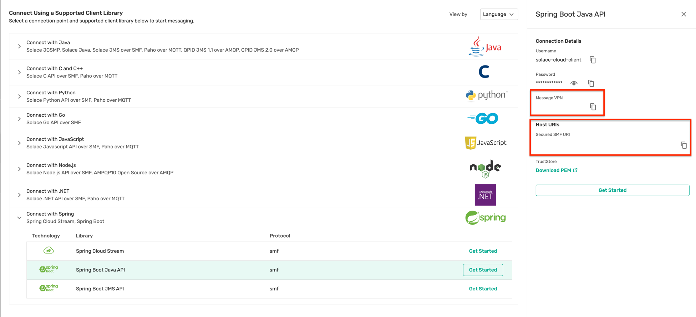
- Fill in the connection details in the appropriate text box and click on the Connect to broker button
- You should see a screen as below with the appropriate connection status : 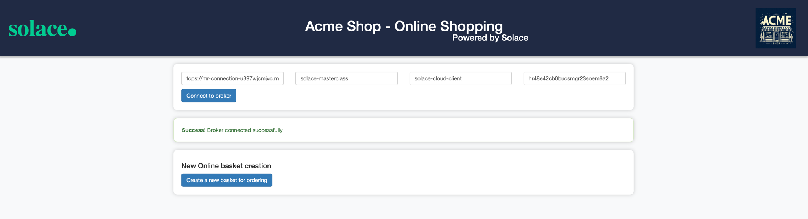
- Click on the Create a new basket for ordering button to simulate a new basket as below: 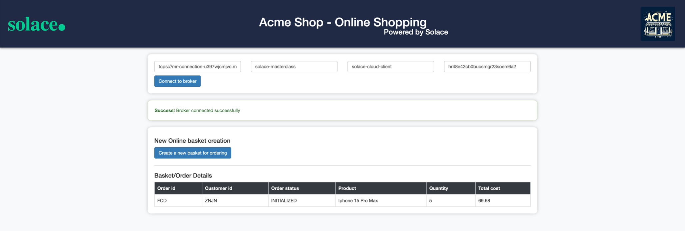
- In the background after 10–15 seconds, the basket is converted into an order and an Order-Created event is automatically triggered, and the status of the order is automatically updated to CREATED as below : 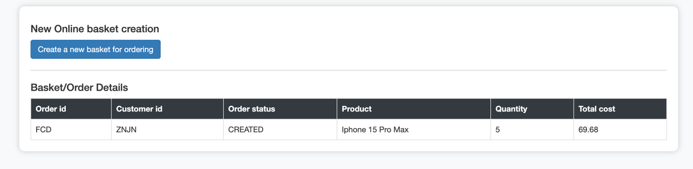
- The Order-Created is published to the topic defined in the Event Portal design as below : 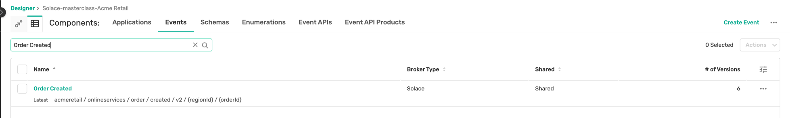
- If you observe the logs closely, you will see that the broker sends back an ACK or Acknowledge for every Order-Created event that is being published. This is because we are publishing these events as Persistent events.
- You can also verify this quickly by using the Try-Me tab.
- Feel free to trigger a few more orders using the UI and observe the payload and topics on which the events are published.
2. Inventory-FraudCheck-Service
Introduction
As Acme-Retail has been facing major challenges with fraudulent orders and realtime stock management, the stakeholders want to ensure that the system is not over committing to orders for which there is no stock. Additionally, they also want to do a fraud check on the customer and order to ensure that only legitimate orders are processed and shipped.
This requirement has been implemented in the Inventory-FraudCheck-Service which subscribes to each incoming Order-Created event and performs the inventory reservation and fraud check. Once this is completed, it triggers an Order-Confirmed event for further processing.
How to run?
Part 1 : Broker Configuration
- Similar to how you deployed the credentials for the Order Service in the previous step, you will need to deploy the application and credentials for the Inventory-FraudCheck-Service as well.
- In the Designer screen, enter the Acme Retail application domain
- Click on the Inventory and FraudCheck Service and open the application
- Navigate to the Configuration tab on the application and add credentials for the application and deploy them to the broker.
Part 2 : Application build and deployment
- Open up a new terminal window, make sure not to close the earlier window running the Order-Service
- Navigate to the location: solace-masterclass/retail-domain/inventory-fraudcheck-service
- Run the command :
mvn clean install - Run the command :
java -jar target/inventory-fraudcheck-service-0.0.1-SNAPSHOT.jar -h HOST_URL -v VPN-NAME -u USER_NAME -p PASSWORD
- Keep an eye out on the logs to see if the application is starting up properly as expected.
Error?
Did you get an error as below complaining about the absence of a queue object :
2024-03-22T12:42:19.725+01:00 INFO 69425 --- [1_ReactorThread] c.s.jcsmp.impl.flow.BindRequestTask : Client-1: Got BIND ('#P2P/QUE/all-orders-placed') Error Response (503) - Unknown Queue
com.solace.messaging.PubSubPlusClientException$MissingResourceException: 503: Unknown Queue
at com.solace.messaging.receiver.PersistentMessageReceiverImpl.createSolaceConsumer(PersistentMessageReceiverImpl.java:1359)
at com.solace.messaging.receiver.PersistentMessageReceiverImpl.onStart(PersistentMessageReceiverImpl.java:1169)
at com.solace.messaging.receiver.PersistentMessageReceiverImpl.startAsync(PersistentMessageReceiverImpl.java:436)
If you remember about Solace Queue which we discussed earlier, we differentiated them into two types :
- Durable: Mostly created by an administrator and always exists on the broker unless explicitly deleted by an administrator
- Non-Durable: Temporary in nature, created only by an application and its lifespan is linked to the client that created it.
Since in the case of Acme Retail, it is critical that no messages are lost during application downtime and also no subscribing application should be able to delete the queue object; an architectural choice was made to use Durable - Exclusive queue configurations.
To fix the error encountered above, you need to create the Queue object as below :
- Open the Inventory and FraudCheck Service and click Advanced Subscription Setup as below :

- Click on the Create Consumer as below and enter the following details in the popup window : 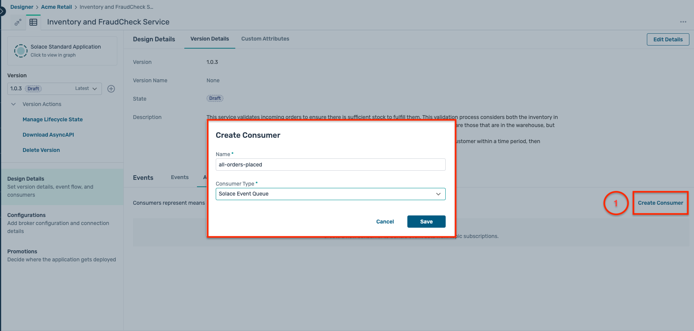
- Name :
all-orders-placed - Type : Solace Event Queue
- Name :
- Clicking on the + symbol for the subscriptions opens up a modal window offering you a pre-selected topic subscription based on your application design

- Click on the Configurations tab on the left sidebar, select the environment and broker selected previously and click on the button Next:Define Event Handling.
- In the Define Event Handling tab, you should see the consumer created in the earlier step :

- Click on the Next:Define Access Control button, but no action is requried on this sub-step as the credentials have already been configured for this application.
- Click Review and then Start Promotion. This will signal Event Portal to push only the new configuration objects to the broker.
- With the above steps, a new queue has been created with the required subscription which can now be connected to by the Inventory-FraudCheck-Service
Retry deployment
Now that the missing queue has been created with the proper subscription, restart/rerun the Inventory-FraudCheck-Service application using the same command : java -jar target/inventory-fraudcheck-service-0.0.1-SNAPSHOT.jar -h HOST_URL -v VPN-NAME -u USER_NAME -p PASSWORD
Output
As you closely observe the logging being displayed on the console, you can see no events coming in from the queue. But how could that be when you clearly created multiple orders from the Order-Service ? 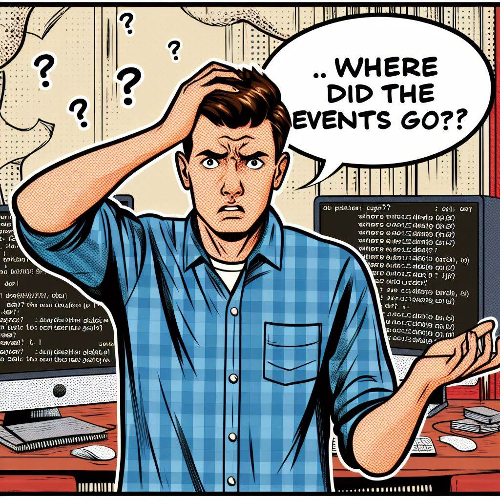
If you think closely, you would realize that when you created those orders, the queue all-orders-placed had not been created yet. So all the Order-created events even though they were marked as persistent and acknowledged by the broker were lost as the broker could not find an active consumer for them.
Now that you have created the queue, newly published orders will lie in the queue till a consumer processes and acknowledge the event.
Let's test out the flow again till now by building and deploying the Order-Service and observing the logs on the Inventory-FraudCheck-Service to see incoming order created events.
New feature enhancement
For each incoming Order-Created event, an Order-Confirmed event will be published as the stock reservation and fraud check passes.
This Order-Confirmed needs to be subscribed by the Order Service. Follow the below steps to enable this flow :
- Navigate to the Designer screen and open the Order Service application.
- In the Advanced Subscription Setup tab, create a new consumer with the below settings :
- Name :
all-order-updates - Type : Solace Event Queue
- Name :
- Clicking on the + symbol for the subscriptions opens up a modal window offering you a pre-selected topic
- You should have a subscription setup which looks like this :

- You should have a subscription setup which looks like this :
- Once the consumer is created, navigate to the Configuration tab and push the updates to the event broker as you have done for the previous applications.
- Publish a few more orders from the Order-Service and see it being processed in the console logs.
- Go back to the Order-Service, and you will observe that the status of the newly created order is showing as VALIDATED as the orders are processed by the Inventory-FraudCheck-Service
Let us continue with the next applications in the OTC flow :
3. Payment Service
Payment-Service-Provider (PSP) or Payment Gateway integrations are inherently complex due to error handling and transaction management, asynchronous communication, scalability, etc. Due to legacy architectural choices, Acme shop has faced considerable challenges in having a stable payment integration leading to revenue loss and customer dissatisfaction in many cases. Hence, PSP integration has been a major component of this POC for validating that Solace and EDA are a viable solution to this problem statement.
Introduction
The Payment-Service subscribes to the Order-Confirmed event being published by the Inventory-Fraudcheck-Service and processes the payment integration for that order.
To denote that the payment processing has begun, it publishes a Payment Created event initially and once the payment authorization and confirmation comes in, an additional Payment Updated event is published.
The Payment Created event is in-turn subscribed by the Order Service for user status updates
How to run?
Part 1 : Broker Configuration
- Navigate to the Designer screen and open the Payment Service application.
- In the Advanced Subscription Setup tab, create a new consumer with the below settings :
- Name :
all-orders-confirmed - Type : Solace Event Queue
- Name :
- Clicking on the + symbol for the subscriptions opens up a modal window offering you a pre-selected topic
- You should have a subscription setup which looks like this :

- You should have a subscription setup which looks like this :
- Once the consumer is created, navigate to the Configuration tab and push the updates to the event broker as you have done for the previous applications.
Part 2 : Application build and deployment
- Open up a new terminal window, make sure not to close the earlier window running the earlier applications
- Navigate to the location: solace-masterclass/retail-domain/payment-service
- Run the command :
mvn clean install - Run the command :
java -jar target/payment-service-0.0.1-SNAPSHOT.jar -h HOST_URL -v VPN-NAME -u USER_NAME -p PASSWORDand observe the console to see what events are getting processed and subsequently produced
Testing
To do a complete end-to-end test of the current flow, you can quickly publish a few more orders from the Order-Service and see the following events being produced and consumed across the three applications :
- Order Created
- Order Confirmed
- Payment Created
- Payment Updated
You can also see that the status of the order in the Order Service changes from Validated to PAYMENT_PROCESSED
4. Shipping Service
Similar to the PSP and payment gateway, integrations with third-party logistics (3PL) forms an integral part of the OTC flow and is responsible for warehousing, inventory, shipping, tracking, reverse logistics etc. Considering the criticality of the use case, Acme Retail is opting to include 3PL integration as a part of the POC for the following reasons :
- Real time updates
- Scalability
- Decoupling of systems
- Fault tolerance
- Extensibility
Introduction
The Shipping Service is the final leg of this POC flow. It subscribes to the Payment Created event, integrates with the 3PL services and publishes the Shipment Created and Shipment Updated events.
The Order Service subscribes to the Shipment Created for user status updates
How to run?
Part 1 : Broker Configuration
- Navigate to the Designer screen and open the Shipping Service application.
- In the Advanced Subscription Setup tab, create a new consumer with the below settings :
- Name :
all-payments-confirmed - Type : Solace Event Queue
- Name :
- Clicking on the + symbol for the subscriptions opens up a modal window offering you a pre-selected topic
- You should have a subscription setup which looks like this :

- You should have a subscription setup which looks like this :
- Once the consumer is created, navigate to the Configuration tab and push the updates to the event broker as you have done for the previous applications.
Part 2 : Application build and deployment
- Open up a new terminal window, make sure not to close the earlier window running the earlier applications
- Navigate to the location: solace-masterclass/retail-domain/shipping-service
- Run the command :
mvn clean install - Run the command :
java -jar target/shipping-service-0.0.1-SNAPSHOT.jar -h HOST_URL -v VPN-NAME -u USER_NAME -p PASSWORDand observe the console to see what events are getting processed and subsequently produced.
Testing
To do a complete end-to-end test of the current flow, you can quickly publish a few more orders from the Order-Service and see the following events being produced and consumed across the 4 applications :
- Order Created
- Order Confirmed
- Payment Created
- Payment Updated
- Shipment created
- Shipment updated
You can also see that the status of the order in the Order Service changes from PAYMENT_PROCESSED to SHIPPED
Benefits realized
As a result of this POC, Acme Retail has achieved a number of benefits including :
- Improved scalability: Event-driven architectures can be more easily scaled than traditional architectures because they are loosely coupled. This means that different parts of the system can be scaled independently without affecting other parts.
- Improved resilience: Event-driven architectures are more resilient to failures than traditional architectures. This is because if one part of the system fails, it will not bring down the entire system. Other parts of the system can continue to process events and eventually catch up when the failed part comes back online.
- Improved agility: Event-driven architectures can make it easier to develop and deploy new features. This is because changes can be made to one part of the system without affecting other parts.
- Improved visibility: Event-driven architectures can provide better visibility into what is happening in the system. This is because events are a record of what has happened, and they can be used to track the progress of orders, identify errors, and audit activity.
Use case explanation
For the banking domain, we will be working with one of the major banks in the world Acme Bank which has been a leader in online banking and customer journey. They have a large customer base which leads to a humungous load of transactions.
As the importance of preventing fraudulent transactions and money laundering grows, Acme Bank is compelled to adhere to stringent legal and security standards. This necessitates thorough transaction monitoring across its systems to ensure compliance with regulatory mandates
On the roadmap to comply with these requirements, Acme Bank is currently facing the following challenges :
- Integration Complexity
- Data Silos
- Legacy Systems
- Real time processing
As a solution, Acme Bank has defined a POC to event enable account handling, transaction management and fraud detection systems. The application and event dependencies are defined as below :
- The Account Management application triggers off an Account Applied event based on user request.
- After background processing, the flow completes with an account being opened and a corresponding Account Opened event being triggered.
- The Core Banking application subscribes to the Account related events and publishes events related to various transactions (Transfer, Withdrawal and Deposit ) being performed on the accounts
- The account's transaction related events are subscribed to by the Fraud Detection application which performs due diligence on these transactions and flags potential fraudulent transactions by triggering a Fraud Detected event
- The Account Management application subscribes to this Fraud Detected event, and after background processing triggers a Fraud Confirmed event and suspends the corresponding account by triggering an Account Suspended event
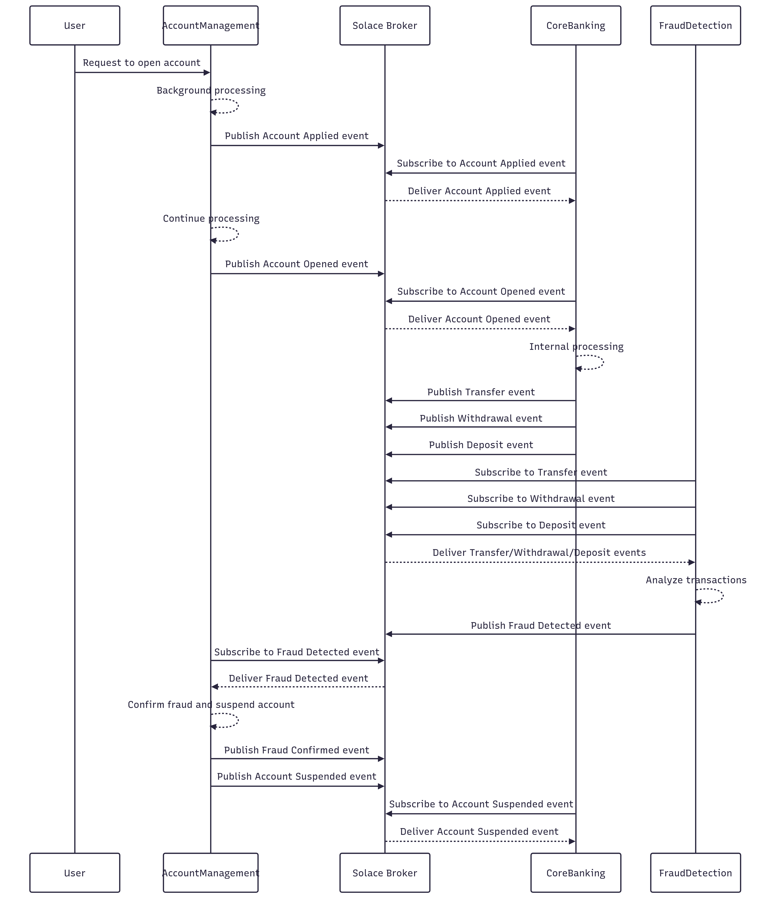
1. Account Management application
Introduction
The Account Management application acts as the entry point for the whole flow and emulates the user experience of applying for a bank account and the background processing associated with that account. As described earlier in the overall flow, it starts with triggering an Account Applied followed by a corresponding Account Opened event. It also subscribes to other relevant Account related events namely the Fraud Detected event and triggers a Fraud Confirmed and corresponding Account Suspended events.
How to run ?
Part 1 : Broker Configuration
- Click on the Designer button and enter the Designer screen where you should be able to see the newly imported Application Domain. 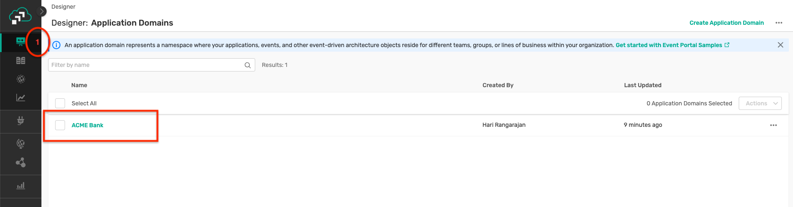
- Click on the Acme Bank application domain, where you can visualise the events, applications and their interactions as below : 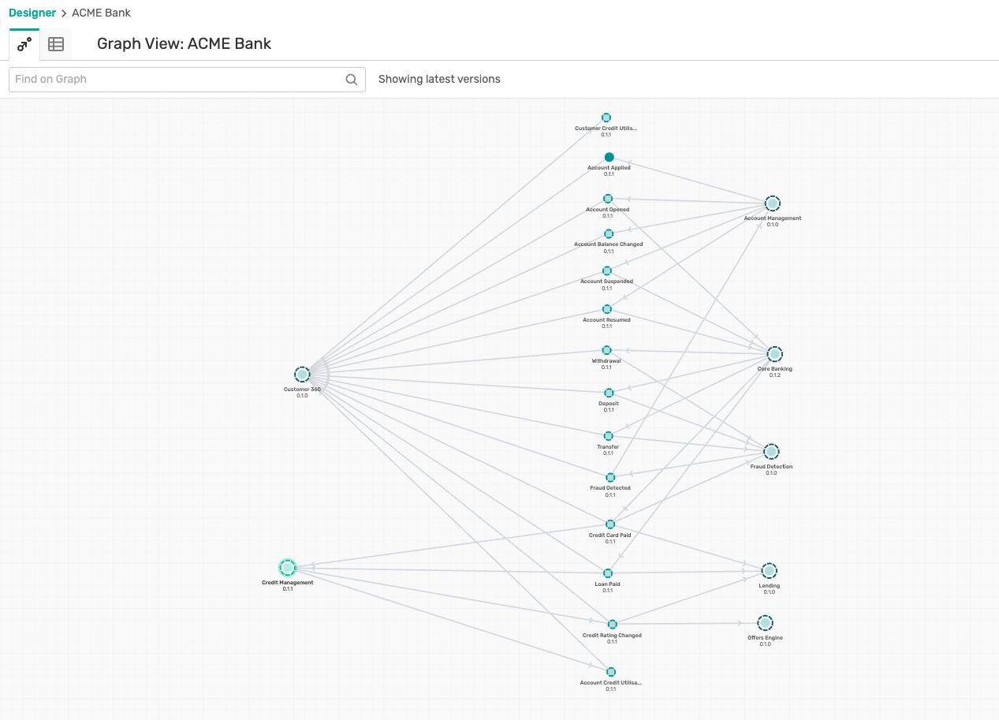
- Click on the Account Management, and then on the Open Application which pops up as below :

- The Account Management application screen displays you the various events that are published and subscribed by this version of the application. 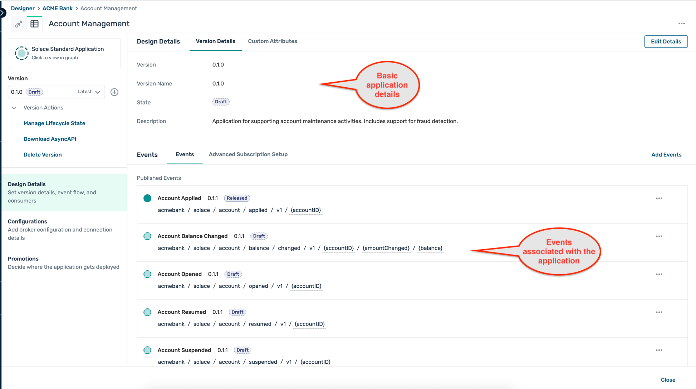
- Click on the Configuration tab on the left of the sidebar as below. This opens up the configuration screen, click on the Create Configurations button as shown:

- A modal window opens up as below, first select the environment and the broker that you have created earlier and click on the Next:Define Event Handling button :

- For now, we are not configuring any consumers (or subscriptions) for this application, so click on the Next: Define Access Control button directly.

- For authentication, select the Basic access type and enter a client username and password of your choice as below. Make sure to keep a note of these credentials as they will be required in the following steps.

- Review the configuration in both the Define Event Handling and Define Access Control tabs and if everything looks as expected, click Start Promotion as below : 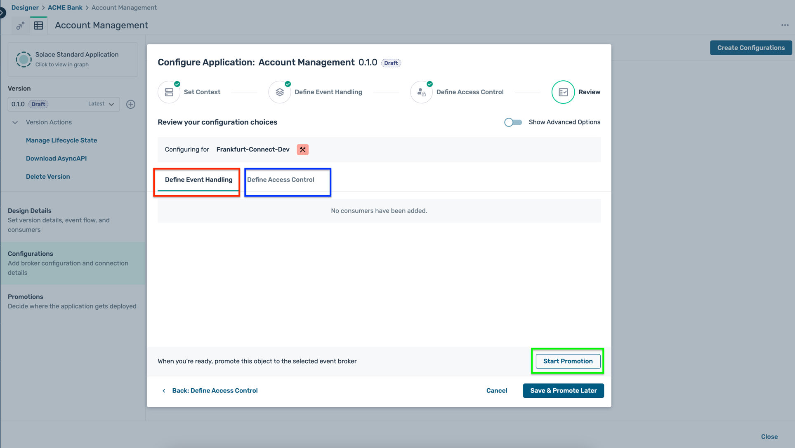
- An intermediate screen is shown as below indicating some design mismatches, but you can safely ignore them for now and click on the Preview Promotion button as below :

- The final promotion preview is shown as below, detailing the various configuration objects that will be created on the broker. Click on the Promote button as shown : 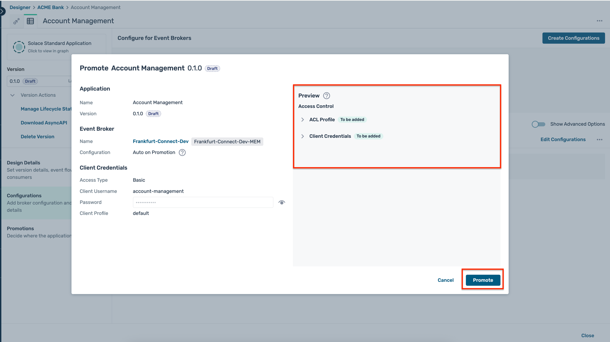
- Once the deployment is completed, you can see the deployed application version on the broker as below :

Part 2 : Application build and deployment
- In the codespace terminal, create a new terminal window by clicking on the + icon on the terminal pane
- Navigate to the directory: solace-masterclass/retail-domain/order-service
- Run the command :
mvn clean spring-boot:run - Once the application is up and running, open the application using the url that is shown in the popup within the codespace.
- You should see a page which looks like this : 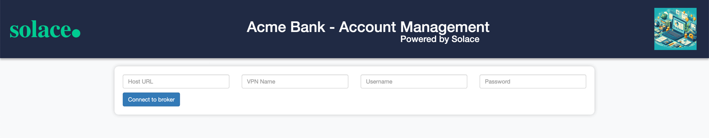
- Here you can connect to your Solace cloud broker instance to publish and subscribe events.
- The connection parameters for the Account management application can be captured from below :
- Make a note of the following properties in a separate file as they will be required for the following steps:
- Public Endpoint
- Message VPN
- The credentials (username and password) were configured in the previous step.
- Fill in the connection details in the appropriate text box and click on the Connect to broker button
- You should see a screen as below with the appropriate connection status : 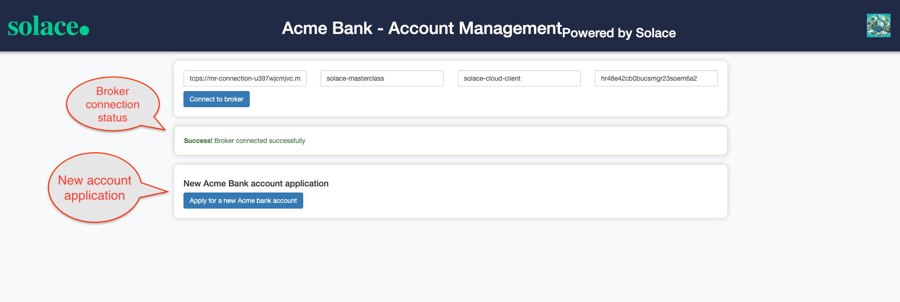
- Click on the Apply for a new Acme Bank account to generate a new account application and trigger an Account applied event and see a screen as below : 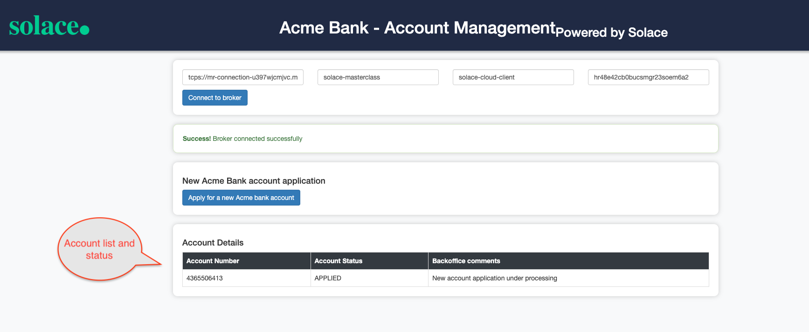
- In the background after 10 seconds, a second Account opened event is automatically triggered and the status of the new account is automatically updated to OPENED as below :

- All the account related events are published to the topics defined in the Event Portal design as below : 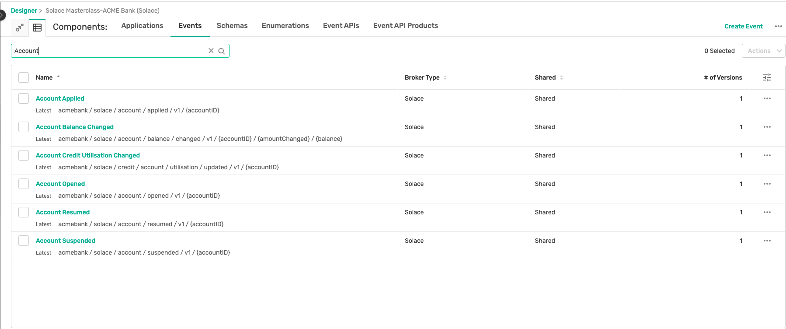
- You can also verify this quickly by using the Try-Me tab. How to do this would have been shown in the earlier half of the day when we discussed the Solace Broker features.
2. Core Banking
Introduction
The Core Banking application is responsible for the execution of all the transactions being performed on the bank accounts like transfers, deposits and withdrawals. The Core Banking Application randomly generates the above transactions on all the accounts which are active.
How to run?
Part 1 : Broker Configuration
- Similar to how you deployed the credentials for the Account Management in the previous step, you will need to deploy the application and credentials for the Core Banking as well.
- In the Designer screen, enter the Acme Bank application domain
- Click on the Core Banking and open the application
- Navigate to the Configuration tab on the application and add credentials for the application and deploy them to the broker.
Part 2 : Application build and deployment
- Open up a new terminal window, make sure not to close the earlier window running the Account Management application
- Navigate to the directory: solace-masterclass/banking-domain/core-banking
- Run the command :
mvn clean install - Run the command :
java -jar target/core-banking-0.0.1-SNAPSHOT.jar -h HOST_URL -v VPN-NAME -u USER_NAME -p PASSWORD
- Keep an eye out on the logs to see if the application is starting up properly as expected.
Error?
Did you get an error as below complaining about the absence of a queue object :
2024-03-22T12:42:19.725+01:00 INFO 69425 --- [1_ReactorThread] c.s.jcsmp.impl.flow.BindRequestTask : Client-1: Got BIND ('#P2P/QUE/accounts-opened') Error Response (503) - Unknown Queue
com.solace.messaging.PubSubPlusClientException$MissingResourceException: 503: Unknown Queue
at com.solace.messaging.receiver.PersistentMessageReceiverImpl.createSolaceConsumer(PersistentMessageReceiverImpl.java:1359)
at com.solace.messaging.receiver.PersistentMessageReceiverImpl.onStart(PersistentMessageReceiverImpl.java:1169)
at com.solace.messaging.receiver.PersistentMessageReceiverImpl.startAsync(PersistentMessageReceiverImpl.java:436)
If you remember about Solace Queue which we discussed earlier, we differentiated them into 2 types :
- Durable: Mostly created by an administrator and always exists on the broker unless explicitly deleted by an administrator
- Non-Durable: Temporary in nature, created only by an application and its lifespan is linked to the client that created it.
Given the criticality for Acme Bank to maintain message integrity during application downtime, alongside the imperative that subscribing applications cannot delete queue objects, an architectural decision was made to implement Durable-Exclusive queue configurations.
To fix the error encountered above, you need to manually create the Queue object as below :
- Open the Core Banking application and click Advanced Subscription Setup as below : :

- Click on the Create Consumer as below and enter the following details in the popup window :

- Name :
accounts-opened - Type : Solace Event Queue
- Name :
- Clicking on the + symbol for the subscriptions opens up a modal window offering you a pre-selected topic subscription based on your application design
- Event Portal identifies multiple possible subscriptions for this consumer, so ensure you select the correct one as below :

- Click on the Configurations tab on the left sidebar, select the environment and broker selected previously and click on the button Next:Define Event Handling
- In the Define Event Handling tab, you should see the consumer created in the earlier step :

- Click on the Next:Define Access Control button, but no action is requried on this sub-step as the credentials have already been configured for this application.
- Click Review and then Start Promotion. This will signal Event Portal to push only the new configuration objects to the broker.
- With the above steps, a new queue has been created with the required subscription which can now be connected to by the Core-Banking
Retry deployment
Now that the missing queue has been created with the proper subscription, restart/rerun the Core Banking application using the same command : java -jar target/core-banking-0.0.1-SNAPSHOT.jar -h HOST_URL -v VPN-NAME -u USER_NAME -p PASSWORD
Output
As you closely observe the logging being displayed on the console, you can see no events coming in from the queue. But how could that be when you clearly created multiple orders from the Account Management Application ?
If you think closely, you would realize that when you created those orders the queue accounts-opened had not been created yet. So all the Account Opened events even though they were marked as persistent and acknowledged by the broker were lost as the broker could not find an active consumer for them.
Now that you have created the queue, newly published orders will lie in the queue till a consumer processes and acknowledge the event.
So trigger a few more Account creation requests from the Account Management Application and see the Account Opened events being triggered. Once this happens, the Core-Banking application should receive those events and start publishing transaction events for the active accounts.
3. Fraud Detection
As the need to prevent fraudulent transactions and money laundering intensifies, Acme Bank is obligated to adhere to stringent legal and security standards. This entails conducting comprehensive transaction checks across its system to ensure compliance with regulatory mandates.
This realtime monitoring of transactions is being handled by the Fraud Detection service. It subscribes to all the transaction events being published by the Core Banking application and flags suspicious/potentially fraudulent transactions by publishing a Fraud Detected event.
How to run?
Part 1 : Broker Configuration
- Navigate to the Designer screen and open the Fraud Detection application.
- In the Advanced Subscription Setup tab, create a new consumer with the below settings :
- Name :
all-transactions - Type : Solace Event Queue
- Name :
- Clicking on the + symbol for the subscriptions opens up a modal window offering you a pre-selected topic
- You should have a subscription setup which looks like this :

- You should have a subscription setup which looks like this :
- Once the consumer is created, navigate to the Configuration tab, create configurations and credentials for pushing to the event broker as you have done for the previous applications.
- Now that you have created the configuration for feeding the Fraud Detection service, we can build and start the application.
Part 2 : Application build and deployment
- Open up a new terminal window, make sure not to close the earlier window running the earlier applications
- Navigate to the directory: solace-masterclass/banking-domain/fraud-detection
- Run the command :
mvn clean install - Run the command :
java -jar target/fraud-detection-0.0.1-SNAPSHOT.jar -h HOST_URL -v VPN-NAME -u USER_NAME -p PASSWORD
Testing and output
- As the application starts, you should be able to see various transaction events like Transfers, Deposit and Withdrawals being published on the active accounts.
- The Fraud Detection application will start flagging potential fraudulent transactions as per its business logic.
4. Completing the flow
Event-Driven Architecture enables modular, iterative development, and fosters innovation by providing a scalable, resilient, and flexible framework for building modern software systems. By embracing EDA principles and practices, organizations can drive agility, responsiveness, and innovation in their software development processes.
Till now, we have :
- Opened new accounts
- Performed transactions on these active accounts
- Performed fraud detection checks on these transactions and flagged suspicious transactions
The next steps are performing a validation of those suspicious transactions and taking action on the linked accounts. Let's start with implementing this feature flow across multiple applications in a modular fashion :
4.1 Account Management application
The Account Management application subscribes to the Fraud Detected event and validates if the transaction is actually fraudulent. If found fraudulent, a corresponding Fraud Confirmed event is triggered and the linked account is suspended by publishing an Account Suspended event.
- Start with creating a new queue for subscribing to the Fraud Detected event
- Navigate to the Designer screen and open the Account Management application.
- In the Advanced Subscription Setup tab, create a new consumer with the below settings :
- Name :
fraud-detected-events - Type : Solace Event Queue
- Name :
- Clicking on the + symbol for the subscriptions opens up a modal window offering you a pre-selected topic
- You should have a subscription setup which looks like this : 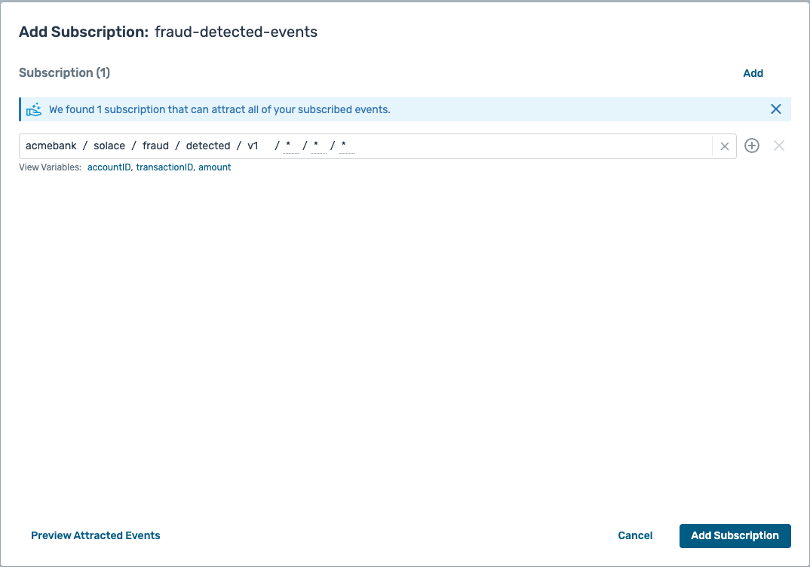
- Once the consumer is created, navigate to the Configuration tab and push the updates to the event broker as you have done for the previous applications.
- Navigate to the folder : solace-masterclass/banking-domain/account-management
- Open the file named com.solace.acme.bank.accountmanagement.service.SolaceEventPublisher.java in the IDE project :
- Add the following code block in the method connectToBroker :
final PersistentMessageReceiver fraudDetectedEventReceiver = messagingService.createPersistentMessageReceiverBuilder().build(Queue.durableExclusiveQueue(configProperties.getSolaceFraudDetectedEventQueue())); fraudDetectedEventReceiver.setReceiveFailureListener(failedReceiveEvent -> log.error("### FAILED RECEIVE EVENT " + failedReceiveEvent)); fraudDetectedEventReceiver.start(); fraudDetectedEventReceiver.receiveAsync(buildFraudDetectedEventHandler(fraudDetectedEventReceiver));- Introduce the below new methods in the SolaceEventPublisher.java file :
private MessageReceiver.MessageHandler buildFraudDetectedEventHandler(PersistentMessageReceiver fraudDetectedEventReceiver) { return (inboundMessage -> { try { final String inboundTopic = inboundMessage.getDestinationName(); log.info("Processing message on incoming topic :{} with payload:{}", inboundTopic, inboundMessage.getPayloadAsString()); boolean eventProcessed = fraudService.processFraudDetectedEvent(inboundMessage.getPayloadAsString()); if (eventProcessed) { fraudDetectedEventReceiver.ack(inboundMessage); } } catch (RuntimeException runtimeException) { log.error("Runtime exception encountered while processing incoming event payload :{} on topic:{}. Error is :", inboundMessage.getPayloadAsString(), inboundMessage.getDestinationName(), runtimeException); } }); }
- Introduce the below new methods in the SolaceEventPublisher.java file :
- Add the following code block in the method connectToBroker :
- Open the file named com.solace.acme.bank.accountmanagement.service.FraudService.java in the same project :
- Introduce the following new method as below in the file :
public boolean processFraudDetectedEvent(final String incomingFraudDetectedEventJson) { try { final FraudDetected fraudDetectedEvent = objectMapper.readValue(incomingFraudDetectedEventJson, FraudDetected.class); boolean isFraud = random.nextBoolean(); if (isFraud) { log.info("Flagging potential fraud as confirmed :{}", fraudDetectedEvent); createAndPublishFraudConfirmedEvent(fraudDetectedEvent); accountService.processAccountSuspensionRequest(fraudDetectedEvent.getAccountNum()); } return true; } catch (JsonProcessingException jsonProcessingException) { log.error("Error encountered while processing FraudDetected event:{}, exception:", incomingFraudDetectedEventJson, jsonProcessingException); return false; } }
- Introduce the following new method as below in the file :
- Open the file named com.solace.acme.bank.accountmanagement.service.AccountService.java in the same project :
- Introduce the following method in the class :
public void processAccountSuspensionRequest(final String accountNumber) { log.info("Processing account suspension"); final AccountAction accountSuspendedAction = createAccountSuspendedEventPayload(accountNumber); solaceEventPublisher.publishAccountSuspendedEvent(accountSuspendedAction); Account account = AccountsList.getInstance().getAccountsList().get(accountNumber); account.setCurrentStatus(Account.Status.SUSPENDED); account.setComment("Account suspended due to potential suspicious/fraudulent transaction(s)"); AccountsList.getInstance().getAccountsList().put(accountNumber, account); }
- Introduce the following method in the class :
4.2 Core Banking
The Account Suspended event published in the previous step is subscribed to by the Core Banking application which stops all transactions on that account number immediately. *
- Start with creating a new queue for subscribing to the Account Suspended event
- In the Advanced Subscription Setup tab, create a new consumer with the below settings :
- Name :
accounts-suspended - Type : Solace Event Queue
- Name :
- Clicking on the + symbol for the subscriptions opens up a modal window offering you a pre-selected topic
- You should have a subscription setup which looks like this : 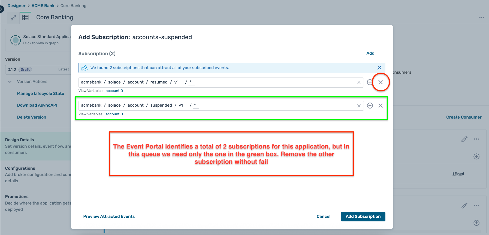
- Once the consumer is created, navigate to the Configuration tab and push the updates to the event broker as you have done for the previous applications.
- Navigate to the location :solace-masterclass/banking-domain/core-banking
- Open the file com.solace.acme.bank.corebanking.service.SolaceEventHandler.java in the project :
- Add in the following code snippet in the connectAndConfigureConsumers method :
final PersistentMessageReceiver accountSuspendedEventReceiver = messagingService.createPersistentMessageReceiverBuilder().build(Queue.durableExclusiveQueue(configProperties.getAccountsSuspendedQueueName())); accountSuspendedEventReceiver.setReceiveFailureListener(failedReceiveEvent -> System.out.println("### FAILED RECEIVE EVENT " + failedReceiveEvent)); accountSuspendedEventReceiver.start(); accountSuspendedEventReceiver.receiveAsync(buildAccountsSuspendedEventHandler(accountSuspendedEventReceiver)); - Add in the following method in the same file :
private MessageReceiver.MessageHandler buildAccountsSuspendedEventHandler(PersistentMessageReceiver accountOpenedEventReceiver) { return (inboundMessage -> { try { final String inboundTopic = inboundMessage.getDestinationName(); log.info("Processing message on incoming topic :{} with payload:{}", inboundTopic, inboundMessage.getPayloadAsString()); boolean eventProcessed = accountsEventProcessor.processAccountSuspendedEvent(inboundMessage.getPayloadAsString()); if (eventProcessed) { accountOpenedEventReceiver.ack(inboundMessage); } } catch (RuntimeException runtimeException) { log.error("Runtime exception encountered while processing incoming event payload :{} on topic:{}. Error is :", inboundMessage.getPayloadAsString(), inboundMessage.getDestinationName(), runtimeException); } }); }
- Add in the following code snippet in the connectAndConfigureConsumers method :
- Open the file com.solace.acme.bank.corebanking.service.AccountsEventProcessor.java in the same project :
- Add in the following method in the file :
public boolean processAccountSuspendedEvent(final String accountSuspendedActionEventPayload) { try { AccountAction accountSuspendedEvent = objectMapper.readValue(accountSuspendedActionEventPayload, AccountAction.class); Account suspendedAccount = Account.builder().accountNumber(accountSuspendedEvent.getAccountNum()).currentStatus(Account.Status.SUSPENDED).build(); AccountsList.getInstance().getAccountsList().put(suspendedAccount.getAccountNumber(), suspendedAccount); log.info("After processing the updated map is :{}", AccountsList.getInstance().getAccountsList()); return true; } catch (JsonProcessingException jsonProcessingException) { log.error("Error encountered while processing AccountOpened event:{}, exception:", accountSuspendedActionEventPayload, jsonProcessingException); return false; } }
- Add in the following method in the file :
4.3 Testing the flow
- In the terminal where you were building the Account-Management application, stop the application (if running) and run the command :
mvn clean spring-boot:run - In the terminal where you were building the Core-Banking application, stop the application (if running) run the commands :
mvn clean installjava -jar target/core-banking-0.0.1-SNAPSHOT.jar -h HOST_URL -v VPN-NAME -u USER_NAME -p PASSWORD
- Make sure that the Fraud-Detection service is also running.
- Start with a clean flow and kick off the flow by creating multiple new accounts in the Account Management application
- As the accounts get confirmed, transactions will start flowing through the Core-Banking and Fraud-Detection applications.
- The Fraud-Detection application will flag some of these transactions as fraudulent
- The Account Management will verify the report of these fraudulent transactions and where applicable will suspend the linked accounts, and you can see the status of these accounts being updated in the accounts' table.
- Once the accounts are suspended, the Core-Banking application will not allow transactions on these accounts
Benefits realized
As a result of this POC, Acme Bank has achieved a number of benefits including :
- Improved Efficiency: By automating tasks and streamlining processes, event-driven architectures can help banks to improve efficiency and reduce costs. For example, in the diagram you sent, the event of an account being applied for could trigger a series of automated tasks, such as verifying the applicant's identity and running a credit check. This would eliminate the need for manual intervention and could significantly speed up the account opening process.
- Enhanced Customer Experience: Event-driven architectures can also help banks to improve the customer experience. For example, if a customer deposits a check, the bank could use an event-driven architecture to send them a notification that the deposit has been received and credited to their account. This would provide customers with real-time information about their accounts and help to improve their overall satisfaction with the bank.
- Reduced Risk: Event-driven architectures can also help banks to reduce risk. For example, in the diagram you sent, the event of a fraud attempt could trigger a series of automated actions, such as blocking the transaction and notifying the customer. This would help to prevent fraudulent transactions from being completed and could save the bank money.
Below are some of the key takeaways from this masterclass :
- Understanding Event-Driven Architecture (EDA): Gain insights into the principles, patterns, and benefits of event-driven architecture, and learn how it enables organizations to build scalable, resilient, and responsive systems.
- Hands-on Experience with Solace:
- Learn how to set up and configure Solace messaging infrastructure to support event-driven applications.
- Explore Solace's features and capabilities, including message routing, topic-based subscriptions, and event-driven integration.
- Practical Application Development:
- Acquire practical skills in designing, developing, and testing event-driven applications using Solace messaging.
- Understand the end-to-end event flow and learn how to implement business logic within event-driven microservices.
- Unlocking Business Value with EDA and Solace:
- Discover the business benefits of adopting event-driven architecture and leveraging Solace messaging for various use cases.
- Learn how EDA and Solace enable organizations to innovate faster, respond to market changes more effectively, and deliver superior customer experiences.

Thanks for participating in this masterclass! Let us know what you thought in the Solace Community Forum! If you found any issues along the way, we'd appreciate it if you'd raise them by clicking the Report a mistake button at the bottom left of this Codelab.
- Link for the Solace Cloud Account: Solace Cloud Account